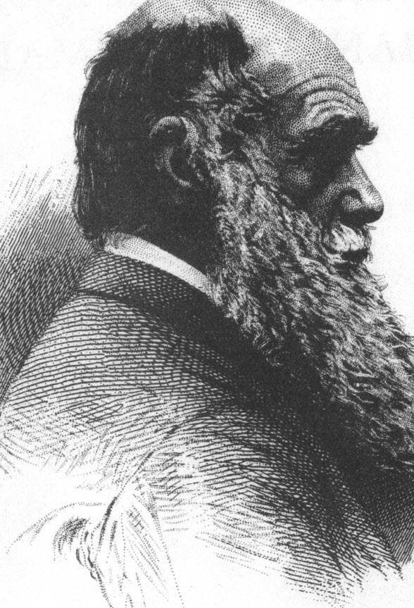
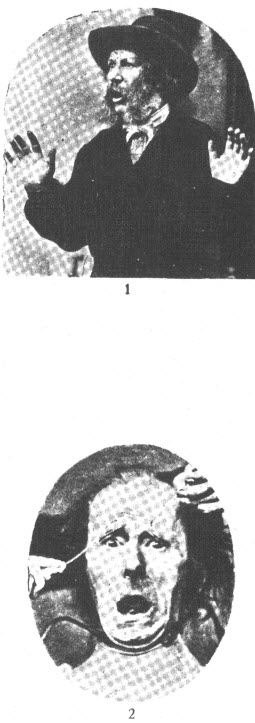
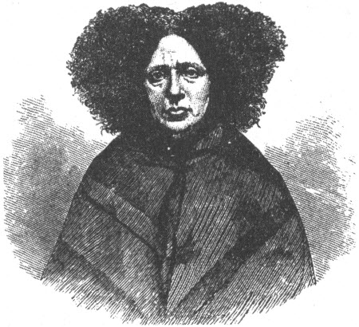
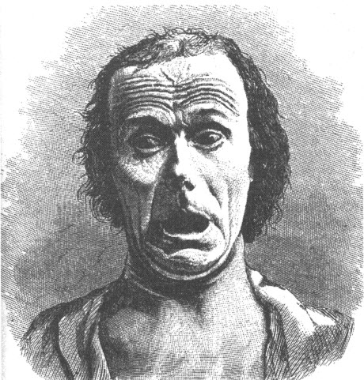
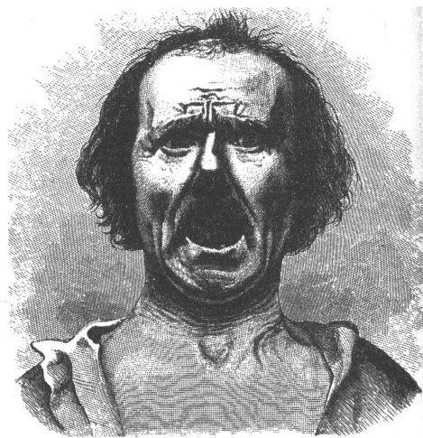

第12章
人类的特殊表情——惊奇、吃惊、恐惧、大惊
·Surprise，Astonishment，Fear，Horror·
结论——现在我们已经努力把恐惧的各种程度不同的表情叙述出来，依次从单单的注意叙述到惊奇的惊起，再到极度恐怖和大惊。有些姿态，可以根据习惯、联合和遗传的原理，来获得说明；例如，嘴和双眼大张，连同双眉上升，是为了要尽可能迅速地看清楚我们四周的一切物体，听清楚任何一种达到我们耳朵里来的声音。这是因为我们通常靠了这些动作可以准备使自己去发现危险和应付危险。

晚年的达尔文画像。
惊奇、吃惊——双眉上升——嘴的张开——双唇突出——和惊奇同时发生的姿态——惊叹——恐惧——恐怖——毛发直竖——颈阔肌的收缩——瞳孔的扩大——大惊——结论
如果对一种物体突然和密切加以注意，那么这种注意就会逐渐转变成为惊奇；惊奇接着转变成为吃惊；而吃惊则又转变成为呆木状态的惊恐。后面的一种精神状态和恐怖极其相似。注意就表现在双眉略微向上升的动作方面；当这种状态加强而成为惊奇的时候，双眉就上升到更高的位置，同时双眼和嘴都张开很大。为了使双眼迅速而宽大地张开，就必须使双眉上升；这种动作就产生了横贯前额的横皱纹。双眼和嘴的张开程度，是和感到惊奇的程度相应的；可是，这两种动作应该互相协调，因为如果嘴张开得很大，而眉毛则只是略微上升，那么结果就会形成一种毫无意义的怪脸，正像杜庆博士在他的一张照片里所表明的情形一样。 (1) 另一方面也可以看到，有人用单单扬起眉毛的动作来假装惊奇的样子。
杜庆博士曾经提供出一张老年人的相片；这个老年人的双眉由于电流通过额肌而显著地上升成为弓形，同时他的嘴则有意地张开来。这张相片很真实地表明出惊奇来。我曾经把这张相片交给24个人去瞧看，同时没有作任何的说明；结果只有一个人完全不明白这张相片表明什么意义。还有一个人回答说是恐怖；这个回答还不能算太错误；可是当中另有几个人则在他们所回答的“惊奇”或者“吃惊”的字前面，还添写了形容词“大惊的”、“忧伤的”、“苦痛的”或者“厌恶的”。
大家都公认，双眼和嘴大张开来的动作就是惊奇或者吃惊的表情之一。例如，莎士比亚说道：“我曾经看到一个打铁工人张开了嘴呆立着，好像要吞下裁缝师傅的消息似的”。（《约翰王》，“King John ”，第4幕，第2场）。他又写道：“他们彼此互相凝视着，好像几乎要把自己的眼眶撕裂开来似的；在他们的沉默里含有着说话，在他们的姿态本身里含有语言；他们的样子好像表明出，他们已经听到了世界毁灭的警报。”（《冬天的故事》，“Winter's Tale ”，第5幕，第2场）
关于各种不同的人种的惊奇表情方面，我的通信报告者们，都以显著的一致性来作了相同情形的回答；在发生上述的面部的动作时候，也同时出现一定的姿态和声音；现在就要来叙述它们。在澳大利亚的不同地区里，有12个观察者对这方面的看法都是一致的。文乌德·利德先生曾经在几内亚海岸（Guinea coast）地方，观察黑人的这种表情。关于南非洲的卡弗尔人方面，酋长盖卡和其他一些人则对我所询问的这种表情回答“是的”；还有关于埃塞俄比亚人、锡兰人、中国人、火地岛人、北美洲的各个土人部落和新西兰人方面，另一些报告者也作了很肯定的回答。例如关于新西兰人方面，斯塔克先生肯定说，某些个别土人要比其他土人更加明显地显露出这种表情来，不过他们大家都尽量设法隐藏住自己的感情。印度公爵勃鲁克说道，婆罗洲的达雅克人在吃惊的时候，把双眼大张开来，时常把头部前后摆动，并且用手敲打自己的胸部。斯各特先生告诉我说，加尔各答植物园里的工人是被严禁吸烟的，但是他们时常违反这条禁令；他们在吸烟时候如果突然发生惊奇，那么最初就是把双眼和嘴大张开来。此后他们也时常略微耸起双肩，因为他们理解到，他们的犯禁行为被发现是无法逃避的；或者由于烦恼而皱眉和蹬脚。不久他们就从惊奇当中恢复过来，于是全身肌肉宽弛而表现出强烈的恐惧来；他们的头部好像下陷到双肩中间去，而失神的双眼就向左右转动；最后他们就哀求饶恕。
著名的澳大利亚的探险家斯都尔特（Stuart）先生曾经提供出 (2) 一个惊人的报道说，有一个土人以前从来没有看见过骑马的人，因此在看到他骑马的情形而发生出呆木的惊恐和恐怖混合在一起的表情来。当时斯都尔特先生在这个土人没有看见他的时候走近过去，并且从很近的距离处向他呼喊。于是“他转过身子来看我。我不知道他在作怎样的想象；可是，我从来没有看到过这一幅恐惧和吃惊互相结合的卓越的图景。他四肢都不能动弹地站立着，好像被钉住在那里，嘴张开来，而且双眼凝视着……他呆木不动，一直到我的黑人同伴走近到离开他不多几码路的时候，他突然抛去自己的战棒，尽量用力跳高而窜进灌木丛里去”。他不会说话，对我的黑人同伴的问话回答不出一个字来，只会全身从头到脚发抖，并且“摇手要求我们走开”。
我们可以从下面的事实方面来推断出双眉由于天生的或者本能的冲动而向上升起；这个事实就是：拉乌拉·勃烈奇孟在吃惊的时候，始终不变地做着这种动作，因为那个最近看护她的妇女是这样向我肯定地谈的。因为惊奇是被某种没有意料到的或者没有知道的事物所激发起来，所以我们在惊起的时候，就自然希望尽可能迅速地辨认出它的原因来；因此，我们就要把自己的眼睛充分张大，而可以扩大视界，并且使眼球容易向任何方向转动。可是，这还是很难去说明眉毛像在实际情形里那样上升很高和张开的双眼作野性的凝视情形。我以为，这种说明就在于：单单提升起上眼睑来，还不可能很迅速地张开眼睛。一定要用力把双眉向上举起，才能够达到这一点。如果任何一个人站在镜子面前，打算要尽可能迅速张开双眼，那么他就会看出自己必须做出这种动作来；在把双眉用力举起的时候，就让眼睛张开得很大，而使它们成为凝视状态；同时瞳孔周围的眼白也显露出来。不但这样，双眉上升对向上瞧看方面有利，因为眉毛在低降的时候，就阻碍着我们向上的视线。贝尔爵士提供出 (3) 一个关于双眉对眼睑张开的作用方面的有趣的小证据来。醉倒的人的一切肌肉都宽弛起来，因此眼睑下垂，好像是我们正将睡着的样子。喝醉的人就举起双眉来对抗这种倾向；因此，这就使他具有一种惶惑而愚蠢的样子，极像何甲斯 (4) 所绘的一幅图画里所良好地表现的形象。在双眉上升的习惯为了尽可能迅速地看清楚我们周围的一切事物起见而一度被我们获得以后，由于联合的力量，在每次出现任何一种原因，甚至是一种突然的声音或者一种观念，而使我们感到吃惊的时候，就会随着采取这种动作。在成年人把双眉提升起来的时候，整个前额就起了很多横皱纹；可是，小孩的前额只是轻度起皱。皱纹的形状相符于那些和每条眉毛有同一圆心的弧线，而且有一部分在中央处合并起来。它们就是惊奇或者吃惊的表情的最显著特征。根据杜庆博士所说，每条眉毛在被提升起来的时候，也比原来时候有更加大的向上的弯度。 (5)
嘴在吃惊时候张开的原因要更加复杂得多；显然有几个原因在同时引起这种动作。时常有人推测说，听觉在张开嘴来的时候变得更加敏锐； (6) 可是，我曾经察看了一些人，当他们在仔细倾听一种轻微的嘈声，而且已经完全知道这种声音的性质和来源的时候，他们却并没张开嘴来。因此，有一个时候我就想象到，张开的嘴可能是要让声音经过耳咽管（欧氏管）进入耳朵里而获得另一条通路，借此帮助辨认声音的行进方向的。可是，奥格耳博士 (7) 曾经很亲切地替我探查最近发表的一些有关耳咽管的机能方面的权威著作；他告诉我说，现在已经差不多完全证明，除了在咽食东西的时候以外，耳咽管经常是闭塞不通的；有些人的耳咽管因发生变态而经常张开，但是就外来的声音方面说来，他们的听觉绝不是良好的；相反地，因为呼吸所发生的声音可以听得更加清楚，所以听觉反而受到障碍。如果把一只表放进嘴里，但是不让它接触到嘴的内壁，那么它的答声要比在嘴外时候更加不容易听清楚。有些人的耳咽管因为生病或者伤风而永久或者暂时闭塞，同时他的听觉也受到损害；可是，可以说明这种情形是由于管内有黏液积集，因此不能让空气通过。因此，我们可以推断说，在惊奇的感觉之下，嘴并不是为了要更加清楚地听闻声音而保持张开的状态；无论如何，多数聋子在这时候也总是把嘴张开来的。
每一种突然发生的情绪，包括惊奇在内，都要使心脏的动作加速，因而连同呼吸的动作也加速起来。根据格拉希奥莱所说， (8) 而且我也同样认为，我们在经过张开的嘴来呼吸的时候，要比经过鼻孔来呼吸时候能够更加呼吸得平静些。因此，如果我们想要去仔细听取任何一种声音，那么我们就要停止呼吸，或者用张开嘴来的办法，尽可能使呼吸平静些，同时还要使身体保持静止不动。有一次在夜里的一个会使人自然发生很大注意的环境下，我的一个儿子被一种噪音所惊醒；他在过了不多几分钟以后，觉察到自己的嘴张开得很大。于是他就意识到，他张开嘴的原因，就是为了要使呼吸尽可能平静下来。这个见解也可以根据狗类方面所发生的一个相反事例来得到证实。如果狗在紧张的行动以后或者在炎热的白天里发生喘息，那么它的呼吸声音很高；可是，如果它的注意力突然被唤起，那么它就立刻竖起双耳来倾听，同时反把嘴闭紧，使呼吸变得达到这个要求。
如果一个人长久专心一致地把注意力集中在任何一个物体或者问题上面，那么他就会把全身一切器官都忘却和忽略去； (9) 同时因为每个人的神经力量在数量是有限的，所以除了当时在发生强盛活动的身体部分以外，就很少被传送到其余的身体部分去。因此，当时有多数肌肉就具有宽弛起来的倾向，同时下颚则由于本身的重量而下垂。这一点就可以说明，一个人在惊恐而呆住的时候，或者也可能在发生较不强烈的情绪时候，为什么下颚下垂和嘴张开来。我发现在自己的笔记本里做过记录，就是：在年纪很小的孩子方面，当他们只会发生适度的惊奇时候，就显现出这种外貌来。
另外还有一种发生高度效果的原因，也会使我们在吃惊时候，或者特别是在突然惊起的时候，把嘴张大开来。这就是我们通过大张开来的嘴要比通过鼻孔能够更加容易作一次充分而深长的吸气。因此，当我们由于听到突然发生的声音或者看到突然出现的景象而惊起的时候，我们全身的几乎一切肌肉就会不随意地在瞬时间里投入强烈的行动，以便保护自己而反抗危险或者离开危险；我们习惯上已经把这种行动去和任何随意事情联合在一起。可是，正像前面曾经说明的情形，我们在要作任何一种重大的努力以前，就时常会无意识地先进行一次深长而充分的吸气来作好这种准备，因此我们也就把嘴张开来。如果并没有努力继续出现，而我们仍旧还处在吃惊的状态里面，那么我们就会使呼吸停止一段时间，或者尽可能平静地呼吸，以便可以清楚地听闻每种声音。还有，如果我们长久专心一致地继续集中自己的注意力，那么我们的一切肌肉就会宽弛起来，而起初突然张开的下颚则仍旧下垂着。因此，每次在发生惊奇、吃惊或者惊恐的时候，就有几种原因一起来引起这同样的动作。 (10)
虽然在受到这种情绪的影响时候，我们的嘴通常张开来，但是双唇则时常略微突出。这种事实使我们想起，黑猩猩和猩猩在吃惊时候也发生同样的动作，不过它们的动作要更加显著得多。因为强烈的呼气随着深长的吸气而发生，而这种吸气则是和初次惊起的惊奇感觉同时发生，又因为双唇时常突出，所以显然从这一点就可以说明当时普通发出的各种不同的声音。可是，有时单单听闻到强烈的呼气声；例如拉乌拉·勃烈奇孟在发生惊恐的时候，就使双唇变成圆形和突出，把它们张开，并且作着强烈的呼吸。 (11) 最普通的一个声音就是低沉的oh（哦）；根据黑尔姆霍兹所作的说明，这个声音是由于嘴适度张开和双唇突出而自然地随着发生出来的。以前在我乘坐贝格尔舰作环球旅行的时候，有一天在平静的夜里，我们在火地岛的小港湾里，从贝格尔舰上施放火箭，来使土人们喜悦；每次在放出一支火箭的时候，大家都静寂无声，但是此后总是跟随发出低沉的叹息声oh（哦）；这使海湾四周都发生出回音来。华盛顿·马太先生说道，北美洲的印第安人就用叹息声来表示吃惊；根据文乌德·利德先生的报道，非洲西海岸上的黑人在吃惊时候也突出双唇，并且发出一个声音，好像是heigh，heigh（吓、吓）。如果嘴张开得不大，而双唇则同时突出得很显著，那么就发出一种吹气声、咝咝声或者口哨声来。勃罗·斯米特先生告诉我说，有一个从内地来的澳大利亚土人，被带进戏院里去观看一个杂技演员迅速翻筋斗的演技；“他当时非常吃惊，突出双唇，并且嘴里发出一种好像吹灭火柴的声音”。根据巴尔满先生的报道，澳大利亚人在惊奇的时候，发出喊叫声korki（科尔奇），“并且在发出这种声音的时候，把嘴伸出，好像正要打起口哨来似的”。我们欧洲人也时常以口哨声来作为惊奇的表征；因此，在最近的一部小说 (12) 里写到一段话道：“在这里有一个男人，正在用发出长口哨声来表示他的惊奇和责难。” (13) 孟谢尔·威尔先生告诉我说，有一个卡弗尔族妇女，“在听到一件物品的价钱太贵时候，就把双眉上扬，并且完全像欧洲人的举动一样打起口哨来”。魏之武先生指出说，这些声音可以用文字表达成whew（吁）；它们也用来作为表示惊奇的感叹词。
根据另外三个观察者的报道，澳大利亚人时常用一种像母鸡叫的咯咯声来表示惊奇。欧洲人有时也用一种近于相同的轻微的咂舌声来表示轻度的惊奇。我们已经看到，在我们惊起的时候，我们的嘴就突然张开来；如果当时舌头正巧贴紧在上颚上，那么它在突然退缩时候，就会发出这种声音来，所以这种声音也就可能作为惊奇的表示。
现在再来讲述身体的姿态。发生惊奇的人，时常把张开的双手高举到头部以上，或者把双臂弯曲而只把双手举起到和面部相平的位置。 (14) 平摊的双手朝对着那个引起这种感情的人，而伸直的五指则互相分开。烈治朗德尔先生在照相图版VII的图1里表明出这种姿态。在莱奥纳多·达·芬奇所绘的画图“最后的晚餐”里，有两个使徒把双手半举起来，明显地表现出他们的吃惊来。有一个可靠的观察者告诉我说，最近他在最意料不到的情现下遇见自己的妻子：“她忽然惊起，把嘴和双眼张开得很大，并且把双臂急速举到头顶上面。”几年以前，我因为看到自己的几个年幼的孩子一同在地面上热心地干着一件事情，但是他们离开我的距离太远，所以我不能够询问他们在干什么事情。因此，我急速把自己的张开的双手连同伸直的五指举起到头顶上；当我一做这个动作以后，我马上意识到这种动作的意义。于是我就等待着，不发一言，观看我的孩子是不是了解这种姿态；他们在跑到我这里来的时候，就叫喊道：“我们以为你对我们所干的事情吃惊了。”我不知道这种姿态究竟是不是各种人种所普遍具有的，因为我忘了把这个问题提出，去向各方面询问。拉乌拉·勃烈奇孟在惊恐的时候，把双臂张开，并且把双手连伸直的五指向上转动；因此，从这个事实可以推断说，这种姿态是天生的或者天然的 (15) ；如果考虑到惊奇的感情通常是突然发生的，那么显然就可以知道，她未必会靠了自己的敏锐的触觉来学习到这种姿态。

赫希克（Huschke）叙述到一种姿态， (16) 它和上面所讲的姿态有些不同，但是又相近似；据他所说，有些人在发生惊奇时候就表现出这种姿态来。他们在这时候保持身体直立，而面貌则像前面所说的样子，但是把伸直的双臂向背后伸去，而且伸直的五指各各分开。我从来没有亲眼看到这种姿态；可是，赫希克大概并没有看错，因为有一个朋友曾经向另一个人询问道，他应该怎样去表现非常吃惊的表情，于是他立刻就扮演出这种姿态来。
我以为，可以根据对立原理来说明这些姿态。我们已经看到，一个愤慨的人使自己的头部保持直竖状态，把双肩挺直，两肘向外转动，时常握紧拳头，皱眉和闭紧了嘴；可是，孤立无援的人的姿态的各个细节，就完全和上述的各个动作相反。其次，如果一个人处在平常的心绪下，不干什么事情和不去想任何特殊的事情，那么他通常就保持双臂软垂在身体两侧，双手略微屈曲，而且五指差不多贴近在一起。因此，一种姿态是把双臂突然举起（或者全部举起，或者只把前臂举起），把拳头平摊张开，并且把五指分开；另一种姿态是把双臂伸直，向背后伸去，并且也把五指分开；这些动作完全和漠不关心的情绪所特有的动作相对立的，因此它们也就被吃惊的人所无意识地采取。除此以外，我们还时常想要用显著的方式来表现惊奇，而上面这些姿势也就很适合于这个目的。可以提出一个问题来：为什么只有惊奇和其他少数精神状态要用那些和其他运动相对立的运动来表现？可是，这个原理却不能适用于像恐怖、大乐、苦恼或者大怒这些情绪方面，这些情绪自然地引起了一定的动作和对身体的一定影响，因为全身组织已经被这些情绪所占有，而这些情绪也已经极其明显地表现出来。
还有一种表示吃惊的小姿态；这是我无法说明的，就是用手搁放在嘴上， (17) 或者搁放在头部的某一部位上。在很多人种方面，都已经观察到这种姿态， (18) 因此它一定具有某种自然的起源。曾经有一个未开化的澳大利亚土人，被带到一个堆满文件的大房间里；这就使他非常惊奇起来，并且把手背挡住双唇，发出cluck，cluck，cluck（克勒克……）的声音来。巴尔满先生说道，卡弗尔人和芬哥人在表示吃惊的时候，采取严肃的面貌，并且用手搁放在嘴上，发出mawo（马哦）这个字音来，它的意义是“可惊”。据说，布希门人（bushmen，南非洲游牧民族）在表示吃惊的时候， (19) 把右手搁放在自己的颈部，并且把头部向后仰起。文乌德·利德先生曾经观察到，非洲西海岸上的黑人在发生惊奇的时候，用手去拍击自己的嘴，同时还说道，“我的嘴把我粘住”，就是把我的手粘住的意思；他还听说，这是他们在这些情况下通常所采用的姿态。陆军上校斯皮德告诉我说，埃塞俄比亚人在吃惊时候，把右手搁放在前额上，而手掌则朝向外方。最后，华盛顿·马太先生肯定说，美国西部的未开化种族在吃惊时候所采取的沿传的姿态，“就是用半闭的手搁放在嘴上；在做这种动作的时候，头部时常向前弯，有时也发出言语或者低声的呻吟”。卡特林（Catlin） (20) 也同样地指出说，印度的孟丹人和其他种族在吃惊的时候把手搁放在嘴上。
惊叹——对这种情绪只要说几句话就够了。显然惊叹是由惊奇和几分愉快与赞成感觉联合而成的。当我们鲜明地感到惊叹的时候，我们的双眼就张开来，双眉向上升起，同时眼睛变得明亮有神，而不像在单纯的吃惊时候那样毫无变化；嘴伸展而成为微笑状态，也不像在吃惊时候那样张大开来。
恐惧、恐怖——“恐惧”（fear）这个字，大概是发源于一种具有“突然”（sudden）和“危险”（dangerous）的意义的字 (21) ；恐怖（terror）这个字则是发源于发声器官和身体的颤抖这方面的。我把“恐怖”这个字来表示极度的恐惧；可是，有几个著作家认为，这个字应限于单单应用在那些使想象力起有特别重大意义的状况方面。恐惧时常在吃惊以前发生，而且这两种情绪又极其相似，都会使视觉和听觉立刻兴奋起来。在这两种情形里，双眼和嘴张开得很大， (22) 同时双眉向上升起。受到惊吓的人，起初好像雕像一样呆住不动，也不呼吸，或者把身子向下屈曲，好像本能地逃避对方的观察似的。
这时候，心脏跳动得迅速而且强烈，因此它甚至摇动或者敲击肋骨；可是，使人感到怀疑的是，心脏在这时候是不是比平常时候要工作得更加有效，因而能够输送较大数量的血液到全身各个部分去，因为当时的皮肤反而立刻变成苍白色，好像是初步昏厥的样子 (23) 。可是，皮肤表面变成苍白色的现象，可能大部分或者专门是由于血管运动中枢受到了那种也使皮肤小动脉起收缩的作用的影响。在强烈的恐惧感觉下，皮肤受到很大的影响；我们可以从那个使汗珠立刻从皮肤里冒出的惊人的不可解释的情况方面来看出这一点。这种出汗现象最值得使人注意，因为这时候皮肤表面仍旧是冰凉的，所以它也就被称做冷汗；可是，在皮肤表面受热的时候，汗腺才正常地受到刺激而起作用。除此以外，在恐惧时候，毛发在皮肤上直竖起来，而皮肤表面的肌肉也颤动起来。由于心脏活动失调，呼吸也随着变得急促起来。唾腺不能够充分起作用，因此嘴变得干燥， (24) 而且时常张开和闭合。我还曾观察到，有人在轻度恐惧时候发生一种要打喷嚏的强烈倾向。恐惧的最显著的征象之一，就是全身肌肉颤抖；最初时常可以从双唇的颤动上看出这一点来。由于这个原因，还有由于嘴的干燥，讲话的声音就变得沙哑或者不清楚，或者会完全不能发出。古时候有一段话道：“Obstupui，steteruntque comae，et vox faucibus haesit。” (25)
在《约伯记》里，有下面一段话，是大家都知道的对于模糊不明的恐惧方面的卓越的叙述：“当人们在熟睡的时候，如果独自思索着夜间的景象，那么恐惧就会来侵犯我，使我发抖，因此又使我的全身骨骼摇动起来。于是就有精灵走过我的面前；我的身上的毛发直立起来；这个精灵仍旧站立不动，但是我辨认不出它的形状；在我的眼睛前面只有一个形象罢了；四周一切都静寂无声；于是我听到一个声音在说道：世间的凡人会比上帝更加正直吗？一个人会比他的创世主更加纯洁吗？”（《约伯记》，第4章，第13节）。
当恐惧增强而成为恐怖的苦恼时候，我们可以看到，它也像在一切激烈的情绪时候所发生的情形一样，产生出各种不同的结果来。这时候，心脏猛烈跳动，或者甚至会停止跳动，接着就是发生昏厥；同时脸色变得死人般苍白；呼吸困难；鼻翼扩大得很厉害；“双唇作着喘息而且痉挛的动作，凹陷的双颊发抖，喉咙梗塞和被扼住”； (26) 一对露出而且突出的眼球固定在恐怖的对象上；或者它们也会左右转动不停，huc illuc volvens oculos totumque pererrat。 (27) 据说，瞳孔也扩张得很大。全身一切肌肉会变得刚硬，或者会被引起痉挛动作。双手轮流握紧和张开，时常也带有痉挛动作。双臂向前伸出，好像要预防某种可怕的危险似的；或者急剧地举到头顶上面。哈格纳乌尔先生曾经看到，有一个发生恐怖的澳大利亚人就做着这种举臂到头顶上面的动作。还有一些人，在发生恐怖时候就具有一种要拼命奔逃的突发的不可抑制的倾向；这种倾向十分强烈，甚至最勇敢的兵士也会因此突然惊慌失措起来。
在一个人的恐惧增强到极点的时候，就可以听到他由于恐怖而发出的可怕的尖叫声。大颗汗珠在他的皮肤上冒出来。全身一切肌肉宽弛。接着立刻发生完全虚脱，同时精神力量衰落。肠子也受到影响。括约肌停止作用，而再也不能够去阻留住身体里面的内含物。 (28)
克拉伊顿·勃郎博士曾经提供给我一个非常动人的报道，这是关于一个35岁的精神病妇女发生极度恐惧的情形的叙述；虽然这个叙述使人看了发生苦痛，但是也不应该略去不谈。当恐怖发作向她袭击的时候，她尖叫起来道：“这是地狱！”“有一个黑人妇女来了！”“我不能走出去！”还有其他类似的呼喊声。在作出这样的尖叫时候，她的动作就是轮流出现的一阵紧张和一阵震颤。在一刹那间，她握紧拳头，把双臂伸一出在自己面前，成僵硬的半屈曲的状态；接着突然把身体向前弯曲，迅速地前后摇摆起来，把手指插进头发里去，紧握住自己的颈部，还要撕破自己的衣服。胸锁乳头肌（sterno-cleido-mastoid muscles，是用来使头部向胸口弯曲的）向外突出得很显著，好像是肿胀似的；而这些肌肉的前面的皮肤则皱缩得很厉害。她的头发被剪短到头部背面，在她安静的时候是平滑的，但是现在就一根根直竖起来；前面部分的头发由于手的撩动而变得蓬乱起来。她的面貌表现出重大的精神苦恼来。面部和颈部和向下到锁骨处的皮肤，都显现出红色来，前额和颈部的静脉扩大，像粗绳一样露出。她的下唇向下垂，而且略微向外翻出。嘴保持着半张开的状态，而同时下颚则突出。双颊向内凹陷，并且从鼻翼到嘴角出现曲线形状的深沟纹。鼻孔本身上升并且扩大。双眼张开得很大，眼睛下面的皮肤显出肿胀的样子，而瞳孔则变大。在前额上出现很多横皱襞；在双眉的内端，由于皱眉肌的强力而永久的收缩，而产生出散射线形状的显著的沟纹。
贝尔先生也曾经叙述到 (29) 一种恐怖和失望的苦恼情形；这是他亲眼从一个被押送到吐林（Turin）去处死刑的杀人犯身上看到的。他写道：“在囚车的两侧，坐着穿法衣的牧师；在它的中央则坐着犯人。去对这个不幸的犯人的状态瞧望而不发生恐怖，是不可能的；可是，好像也有某种奇怪的诱引力在强迫着大家似的，同样也不可能不去瞧看这样凶暴而且充满恐怖的对象物。这个犯人的年纪大约35岁，体格巨大而且强壮；他的面貌显出坚强，而又凶残的样子；身体半裸，面孔苍白得像死人一样，发生恐怖的烦恼，四肢都由于苦恼而紧张起来，双手痉挛地紧握住拳头，在他的皱紧而收缩的眉毛上面的额上冒出汗珠；他不断地吻着一面悬挂在他前面的旗子上所画着的救世主的神像，但是仍旧带着一种凶暴和失望的苦恼；在舞台上绝不能表明出这种苦恼的最轻微的概念来”。
为了说明一个由于恐怖而完全虚脱的情形，我打算只是再提出一个事例来补充。有一个杀死两个人的凶残的杀人犯，因为被人误认已经服毒自杀而被送进医院去；第二天上午，当警察把手铐戴在他的手上而把他捕走的时候，奥格耳博士就细心察看了他的举动。当时他的脸色极其苍白，力量大大衰减，以致不能亲自穿衣服。在他的皮肤上冒出汗来；眼睑和头部下垂得很低，因此甚至要去瞧望一下他的双眼也不可能。他的下颚向下垂。面部的任何一种肌肉都不收缩；据奥格耳博士所说，他的头发并不直竖起来，这一点大概是确实的，因为他曾经迫近地观察犯人的头发；当时犯人为了要隐藏起来而染了头发。 (30)
至于说到各种不同的人种所表现的恐惧情绪方面，那么我的报告者们都一致同意说，他们所观察到的土人都像欧洲人一样，都具有这种情绪的表征。印度人 (31) 和锡兰的土人的这些表征更加显著得多。吉契先生曾经看到，在马来人发生恐怖时候，他们的脸色变成苍白，并且身体颤动；勃罗·斯米特先生肯定说，有一个澳大利亚土人，“有一次发生很大的惊恐，他的脸色显示出一种近于所谓苍白的颜色，正像在一个皮肤极黑的人的情形方面所能够清楚辨别出来的那样”。 (32) 但松·拉西先生曾经看到一个澳大利亚人发生极大恐惧的情形；当时这个人的双手双脚和双唇发生神经性挛缩，并且在皮肤上冒出汗来。很多未开化的人不能够像欧洲人那样抑制恐惧时候所作的姿态表征，并且他们的身体时常激烈地颤抖。盖卡用他的比较奇特的英语说道，在卡弗尔人发生恐惧的时候，他们的“身体发抖情形时常发生，而双眼则张开得很大”。在未开化的人方面，他们的括约肌时常宽弛，正好像从大受惊恐的狗方面可以观察到的情形一样；我曾经观察到，在猿类因被捕捉住而发生恐怖的时候，它们也发生这种情形。
毛发直竖——有几种恐怖的表征，值得使人对它们作略微进一步的考察。诗人时常讲到毛发直竖的现象。布卢特斯（Brutus，公元前85—42年）讲到凯撒大帝的阴魂道：“你是谁……你使我的血液在血管里冰冻起来，并且使我的头发直竖起来。”红衣主教标福（死于1447年）在看到格洛西斯脱（Gloucester）被谋杀以后就喊道：“把他的头发向下梳平；瞧吧，瞧吧，头发还直竖着哩！”我因为不敢确信，寓言作家们把他们时常从动物方面所观察到的情形搬用到人类方面来，是不是能够算是正确的事情，所以就去请求克拉伊顿·勃郎博士告诉我关于精神病患者方面的情形。他肯定说，他曾经多次看到，在精神病患者受到突然的极端恐怖的影响时候，他们的头发就直竖起来。例如，有一个患精神病的妇女，医生时常要对她施行吗啡的皮下注射；这种注射手术所引起的疼痛虽然极其轻微，但是使她非常害怕，因为她当做医生把毒药打进了她的身体里，她的骨头就要变软，而且身上的肉会因此变成灰尘。于是她的脸色变成死灰色，四肢发生一种破伤风性的强直痉挛，头部前面的一部分头发直竖起来。
其次，勃郎博士又指出说，精神病患者所时常发生的毛发直竖现象，却并不和恐怖联合在一起出现。 (33) 大概患慢性癫狂病的人（chronic maniacs）最经常发生这种情形；这些病人时常发出胡乱的谵语，并且具有破坏的冲动；可是，要在他们的狂乱发作时候，才可以最清楚地观察到头发直竖的现象。在大怒和恐惧的影响下，头发直竖的事实，是和前面我们从比较低等的动物方面所看到情形完全一致的。勃郎博士举出了几个事例来作为证明。例如，在精神病院里，现在有一个病人，每次在发生躁狂发作以前，“他的头发就从前额上面直竖起来，好像设得兰驹（Shetland pony）的鬣毛一样”。勃郎博士寄送给我两张妇女的相片，是在她们疯狂发作的时候拍摄的；他还补充讲到当中一个妇女的情形道：“她的头发的状态，就是她的精神状态的一种确实的症状性的表征。”我已经把其中一张相片复制；如果站在稍远处瞧看这张复制的木刻图，那么它很能忠实地代表原来的照片，只不过她的头发显得比较太粗和太屈曲。神精病患者的头发所以有这种特殊的状态，不仅是在于它的直竖，而且也在于它的干燥和粗硬，这是因为皮下腺丧失作用而发生的。巴克尼尔（Bucknill）博士曾经说道，疯子“就是一个全身直到指尖都是疯狂的人”； (34) 他大概还可以补充说：疯子而且还是直到每根个别的毛发的尖端都是疯狂的。
勃郎博士提出下面一个事例，来作为精神病患者的毛发状态和精神之间所存在的关系的实验上的证据，就是：有一个医生的妻子，在看护一个患有严重的忧郁病的妇女；这个妇女由于幻想自己本身、她的丈夫和孩子会死亡而发生强烈恐惧；勃郎博士在接到我的信的前一天，听到这个医生的妻子口头报告如下：“我以为这位太太的病不久就会好转，因为她的头发正在变得光滑起来；我时常注意到，当我所看护的病人的头发不再粗硬和变得柔顺的时候，他们的病情就会好转。”（图19）

图19 一个患精神病的妇女；表明出她的头发直竖起来的姿态
勃郎博士认为，很多精神病患者的头发永远粗硬的状态，一部分是由于他们的精神时常有些错乱，还有一部分是由于习惯的影响，就是由于他们的毛发在他们的毛病多次重复发作时候经常坚强地直竖起来而造成的。如果精神病患者的毛发直竖程度达到极点，那么他们的病通常就会成为永久性的和致命的；可是，如果毛发直竖程度是中等的，那么当他们的精神恢复到健康状态的时候，他们的头发也马上会恢复它的平滑状态。
在前面的一章里，我们已经知道，动物的毛发，是由于那些连通各个分离的毛囊的微小、平滑而不随意的肌肉发生收缩，而直竖起来的。除了这个动作以外，据武德（J. Wood）先生告诉我说，他已经用实验来清楚地得到确证，就是：人类的头部前面的向前披下的头发，还有背面的向后披下的头发，会由于颅顶肌（occipito-frontalis or scalp muscle）收缩而向相反的方向升起。因此，这种肌肉显然在帮助人类头部上的毛发直竖起来，也同样像是有几种比较低等的动物的类似的皮下肌层（panniculus carnosus）帮助或者大部分参加它们背部的刺毛的直竖动作的情形一样。
颈阔肌的收缩——这种肌肉分布在颈部的两侧，向下伸展到锁骨（collar-bones）的稍下处，而向上则达到双颊的下面部分。它的一部分被称做笑肌（risorius）；绪论里的木刻图的图2（M）就表明出它来。这种肌肉在收缩时候，就把嘴角和双颊的下面部分向下和向后牵引。同时，在青年人方面，颈部两侧就产生出散射的长的显著皱襞来；而在面孔瘦削的老年人方面，则产生出微细的横皱纹来。有时据说这种肌肉不受到意志的支配；可是，如果请大家用很大的力量把自己的嘴角向后和向下牵引，那么差不多每个人都会使颈阔肌发生动作。可是，我曾经听说，有一个人只能够使颈部的一侧的颈阔肌作有意的动作。
贝尔爵士 (35) 和其他研究家们肯定说，这种肌肉在恐惧影响下强烈收缩；杜庆很坚决地主张这种情绪的表现是重要的，因此他就把这种肌肉叫做惊恐肌（muscle of fright） (36) 。可是，他认为，在颈阔肌收缩的时候，如果双眼和嘴不同时大张开来，那么这就变得毫无表情。他曾经提供出一张和上面情形相同的老年人的相片［附印的木刻图（图20）是它的复制的缩小的图］；这个老年人的表情都是用通电方法所产生的：双眉强烈上升，嘴张开，颈阔肌收缩。我曾经把原来的相片送给24个人瞧看，并且分别去询问他们这种表情表现出什么情绪，同时并不向他们作任何的说明；结果有20个人立刻回答是“激烈的惊恐”或者“大惊”；有3个人说是“苦痛”，而最后一个人则说是“极度的烦恼”。杜庆博士曾经提供出相同的老年人的另一张相片，也是用通电的方法来使他的颈阔肌收缩，双眼和嘴张开，双眉倾斜。这种方法所产生的表情非常显著（参看照相图版VII，图2 ）；双眉倾斜增添了重大的精神痛苦的外貌。我曾经把原来的相片送给15个人瞧看；当中有12个人回答是“恐怖”或者“大惊”；另外3个人则回答是“疼痛”或者“大苦恼”。如果根据这些事例来判断，并且去考察杜庆博士所提供的其他照片和他的意见，那么我认为毫无怀疑的是：颈阔肌的收缩显著地增强着恐惧的表情。可是，未必应当把这种肌肉叫做惊恐肌，因为它的收缩的确不是惊恐这种精神状态的必需的伴随动作。

图20 恐怖 （依照杜庆所提供的相片复制）
一个人可以用下面的状态来表明出极端的恐怖，就是：脸色成为死人般的苍白色；在他的皮肤上有汗珠滴下来；完全疲乏无力，同时全身一切肌肉（连颈阔肌也包括在内）完全宽弛。虽然勃郎博士时常看到精神病患者的这种肌肉发生颤抖和收缩，而且还仔细地注意到那些受到很大恐惧的病人，但是他还不能够把这种动作去和他们的任何情绪状态联系起来。从另一方面说来，尼古尔先生曾经观察了三个精神病患者的情形，他们的颈阔肌在忧郁病和剧烈恐怖的联合影响之下，显出多少是永久收缩的样子；可是，当中有一个精神病患者，他的颈部和头部的其他各种不同的肌肉，也受到影响而发生痉挛性收缩。
奥格耳博士在伦敦的一个医院里，替我观察了大约20个病人在刚要受到氯仿麻醉手术以前的表情变化。他看出，这些病人虽然显出略微有些发抖，但是并没有多大的恐怖。只有4个病人的颈阔肌发生可见的收缩；而这种收缩要到病人开始哭喊的时候方才发生。显然这种肌肉在每次深长的呼吸时候才起收缩，所以究竟这种收缩是不是完全依靠于恐惧的情绪，还是很使人怀疑的。在第五个事例里，有一个还没有受到氯仿麻醉手术的病人，却发生极大的恐怖，他的颈阔肌也就比其他病人收缩得更加有力而且长久。可是，甚至在这里也有使人可疑的地方，因为奥格耳博士看到，在手术结束以后，而在把这个人的头部搬移到枕上去的时候，这种显然是异常发达的肌肉又在发生收缩。
我因为很不明白为什么在任何情形里颈部的表面肌肉特别会受到恐惧的影响，所以就去请求我的非常亲切的通讯者们，把这种肌肉在其他情况下的收缩情形告诉我。要在这里把我所收到的一切关于这方面的回答都发表出来，恐怕是太啰嗦了。这些回答表明出，这种肌肉时常在很多不同的条件下，以各种各样的方式和程度来起作用。狂犬病（恐水病）患者的颈阔肌收缩得很激烈；咀嚼肌痉挛症（牙关紧闭症）患者的颈阔肌则收缩得略为轻微些；有时在病人受到氯仿麻醉而无感觉的时候，他们的颈阔肌也发生显著的收缩。奥格耳博士观察了两个病人，他们患呼吸困难的病症很严重，所以不得不施行切开气管的手术；这两个病人的颈阔肌在施行手术时候都强烈收缩。当中有一个病人，当时曾经偷听到几个围绕在他身边的外科医生的谈话，所以在以后能够说话的时候，就声明道，他在施行手术时候并不感到惊恐。还有几个患呼吸极度困难的病人，但是没有施行切开气管的手术，据奥格耳博士和朗斯塔夫博士的观察，他们的颈阔肌并不收缩。
武德先生曾经很细致地研究过人体的肌肉；根据他所发表的各种著作可以知道，他时常看到颈阔肌在呕吐、干呕和厌恶时候发生收缩；还有在小孩和成年人发生大怒时候，他们的颈阔肌发生收缩；例如，在爱尔兰妇女互相争吵喊叫而且作着发怒的姿势时候，她们的颈阔肌就发生收缩。这种情形大概是由于他们发出高大的愤怒声调而发生的，因为我知道，有一个妇女是卓越的音乐家，她在用一定的高音歌唱时候，就时常使自己的颈阔肌收缩。我曾经观察到，有一个青年在用笛吹奏出某些音来的时候，也使颈阔肌收缩。武德先生告诉我说，那些有粗颈和宽肩的人的颈阔肌最发达；在那些遗传着这些特征的家族里，颈阔肌的发达程度，通常就和那种很随意地支配类似的颅顶肌（使头皮移动的肌肉）的收缩动作的能力联合在一起。
在上面所讲到的事例当中，下面所提出的事例就不同了。前面曾经讲到一个只能够使颈部一侧的颈阔肌随意动作的绅士，他却肯定说，当他每次在惊起的时候，他的颈阔两侧的肌肉就会同时收缩。我们已经提出证据来证明说，在有些人因为生病而呼吸变得困难时候，还有在病人施行手术以前哭喊发作而作深吸气的时候，有时大概为了要把嘴大张开来，这种肌肉就发生收缩。还有，一个人在每次由于突然看到某种东西或者听到某种声音而惊起的时候，就立刻会作一次深呼吸；因此，颈阔肌的收缩大概也可能和恐惧的感觉联合起来。可是，我以为，还存在着一种更加有效的联系。恐惧的最初感觉，或者一种对于某种可怕情形的想象，通常会引起身子发抖。有一次我曾经想到一件苦痛的事情，这就使自己的身子发生略微不随意的颤抖；同时我清楚地觉察到，我的颈阔肌也在收缩；如果我故意使自己发抖，那么它也随着收缩起来。我曾经请其他的人作着同样的发抖动作，结果有几个人的颈阔肌就收缩起来，但是其余的人的颈阔肌则没有收缩。我的一个儿子在起身下床的时候，因为受寒而发抖；当时他偶然用手去摸自己的颈部，因此就明显地感觉到这种肌肉在强烈收缩。此后，他故意也像以前的情形那样发抖起来，但是他的颈阔肌却不再受到影响而收缩。武德先生也有几次观察到，在有些病人脱衣而听受检查的时候，他们的颈阔肌发生收缩；当时他们并不发生惊恐，只不过因为受寒而略微发抖罢了。可惜我还不能够去肯定说，在全身震颤的时候，例如在疟疾发作的寒战时候，颈阔肌是不是也发生收缩。可是，这种肌肉在身子发抖时候确实是时常收缩的；因为发抖或者战栗时常和恐惧的最初感觉同时产生，所以我认为，我们也就可以获得线索来解释它在恐惧时候的动作。 (37) 可是，这种肌肉的收缩却不是经常要和恐怖同时产生的，因为大概在极度的虚脱性的恐怖影响下，它就不再会起作用了。
瞳孔的扩大——格拉希奥莱多次坚持说， (38) 每次发生恐怖的时候，瞳孔就极度扩大。虽然我没有理由去怀疑这种说法的正确性，但是除了前面所举出的一个受到极大恐惧的精神病妇女的例子以外，我还没有获得确实的证据。 (39) 在寓言作家谈到双眼大张的时候，我以为，他们所指的是眼睑的大张。门罗（Munro）肯定说， (40) 鹦鹉的眼睛虹膜受到激情的影响，而和光量的多少无关；这种说法显然和现在这个问题有关；可是，唐得尔斯教授告诉我说，他曾经时常看到这些鸟的瞳孔变化；他认为，这是和它们调节距离的能力有关，差不多也和我们的双眼由于观看近处物体而收敛时候所发生的瞳孔收缩情形相同。格拉希奥莱指出说，扩大的瞳孔真好像是它们在凝视深远的黑暗似的。一个人在黑暗里确实无疑会时常发生恐惧，但是在黑暗里也未必有这样经常或者专门地发生出这种情绪来，因而可以用它去说明一种固定的联合性习惯是这样产生的。如果我们假定格拉希奥莱的说法是正确的，那么显然可以更加认为正确的是：脑子直接受到强烈的恐惧情绪的影响，因而再去对瞳孔发生影响；可是，唐得尔斯告诉我说，这是一个极其复杂的问题。为了尽可能使这个问题获得一些解释的线索起见，我以为可以补充提出下面一些事实：涅特力医院（Netley Hospital）的费夫（Fyffe）医生观察到，有两个病人，在疟疾发作的恶寒期间里，他们的瞳孔显著地扩大。唐得尔斯教授也时常看到瞳孔在昏厥开始时候扩大的情形。
大惊（Horror）——这个名词所表示的精神状态，含有恐怖的意义；在有些情形下，它差不多和恐怖的意义相同。在使人感恩的氯仿麻醉手术还没有被发明以前，很多人一想到一种就要受到的外科手术时候，就一定发生起严重的大惊来。如果一个对别人发生害怕和憎恨，那么他就会像密尔敦（Milton）所使用的说法，对人发生大惊。如果我们看到任何一个人，例如看到一个小孩，正在遇到某种紧急的严重危险，那么我们就会发生大惊。差不多每个人在亲眼看到一个人正在或者将要受到残酷刑罚的时候，就会感受到极度的大惊。在这些情形里，虽然这些景象对我们自身没有危险，但是由于想象和同情的力量，我们就好像把自己放置到了苦难者的地位上，并且发生出某种和恐惧类似的情绪来。
贝尔爵士指出说，“在大惊时候充满着精力；身体处在极度紧张状态，并不因为恐怖而减弱” (41) 因比，在大惊的时候，通常就很可能同时发生双眉强烈收缩的现象；可是，因为恐惧也是它的要素之一，所以双眼和嘴应该张开，双眉上升，但只是达到皱眉肌的对抗作用对这种动作所能容许的范围。杜庆曾经提供出一张上面所讲到的同一老年人的照片 (42) （图21）；他的双眼有些凝视不动；双眉一部分上升，同时又强烈收缩，嘴张开，而颈阔肌也起作用；所有这一切，都是被电流所激发起来的。杜庆博士认为，这种方法所产生的表情，表明出一种带有可怖的苦痛或者剧痛的极度大惊。如果有一个受到酷刑的人，他的痛苦还容许他对于将来的酷刑再发生任何的畏但，那么他很可能表现出极度的大惊来。我曾经把图21的原来的照片送给23个性别和年龄不同的人瞧看；当中有13个人立刻回答这种表情是“大惊”、“重大的苦痛”、“剧痛”或者“苦恼”；有3个人回答是“极度恐惧”；因此，这16个人的回答差不多相符于杜庆的见解。可是有6个人却回答是“愤怒”；显然无疑他们单凭了双眉强烈收缩这方面，而忽略了嘴特殊地张开的情形。最后一个人则回答是“厌恶”。总的说来，他们的回答已经证明，这张照片相当忠实地表达出了大惊和苦恼来。以前曾经讲到的照片（照相图版VII，图2）也表明大惊，不过这张照片里的双眉倾斜，显示出很大的精神痛苦，而没有显示出精力来。

图21 大惊和苦恼 （依照杜庆所提供的照片复制）
在大惊的时候，通常还同时发生各种因人而不同的姿态来。从图画上面可以得到判断，时常整个身体由于大惊而转开或者发抖，或者双臂猛烈向前伸出，好像要推开某种可怕的东西似的。根据那些努力要表明出一种鲜明地想象到的大惊场面来的人的动作可以作出断定说，最经常表现的姿态，就是双肩耸起，双臂弯曲而紧靠在身体的两肋或者胸部。这些动作差不多和我们普通在感到非常寒冷时候所做的动作相同； (43) 而且它们通常还和一阵发抖和一次深呼气或者深吸气同时发生；根据当时胸部情形，如果正在扩张，则作深呼气；如果正在收缩，则作深吸气。因此，可以用英文字uh（呜）或者（呜嘿）来表示这两种声音。 (44) 可是，我们还不能明白，为什么当时我们要把弯起的双臂贴紧身体，把双肩耸起，并且发抖。 (45)
结论——现在我们已经努力把恐惧的各种程度不同的表情叙述出来，依次从单单的注意叙述到惊奇的惊起，再到极度恐怖和大惊。有些姿态，可以根据习惯、联合和遗传的原理，来获得说明；例如，嘴和双眼大张，连同双眉上升，是为了要尽可能迅速地看清楚我们四周的一切物体，听清楚任何一种达到我们耳朵里来的声音。这是因为我们通常靠了这些动作可以准备使自己去发现危险和应付危险。在其他的恐惧方面的姿态动作当中，有几种也可以根据同样的原理来获得说明，至少是获得一部分的说明。人类在数世代里，曾经用急速飞奔或者激烈挣脱敌手的方法，去逃避开敌人或者危险；这些重大的努力就会引起心脏迅速跳动，呼吸急促，胸部挺起，而且鼻孔扩大。因为这些努力时常延长到最后关头，所以它的最后结果就是完全虚脱，脸色苍白，出汗，全身肌肉颤动或者完全宽弛。因此到现在，每次在发生强烈的恐惧情绪时候，即使它还不会引起任何的努力，却也能够由于遗传和联合的力量，而发生重现同样结果的倾向。
虽然这样，在上述的恐怖的征象当中，有很多或者多数征象，例如心脏跳动、肌肉颤抖、出冷汗等，很可能大部分直接由于下面情形而发生，就是：因为精神（脑子）受到恐怖的很强烈的影响，所以神经力量从脑脊髓神经系统向身体各部分的传送受到破坏或者中断。我们可以确信地认为，像肠子的分泌遭到破坏和有些腺的活动停止这些情形，就由于这种情形而发生，而和习惯与联合无关。至于说到毛发不随意竖直的现象，那么我们已经有了良好理由可以去认为：在动物的情形方面，这种动作不管它的起源究竟怎样，应该连同一定的有意的动作，用来使它们对敌方显出可怕的外貌来；又因为同样的不随意动作和随意动作，被那些和人类有相近亲缘关系的动物所进行，所以这就使我们去相信，人类已经由于遗传而获得了这些现在已经变成无用的动作的痕迹。有一个的确值得使人注意的事实，就是：在人类的几乎裸露的身体上稀疏地分布着毛发；这些毛发靠了细小的平滑肌的收缩而直竖起来；而这些肌肉竟一直保存到了现在；还有，在那些引起与人类同一目（order）的比较低等的动物的毛发直立的情绪（就是恐怖和大怒）之下，这些细小的平滑肌（立毛肌）到现在也仍旧在收缩着。
————————————————————
(1) 杜庆：《人相的机制》，册页本，1862年，第42页。
(2) 斯都尔特：《多种文字的报道信》，墨尔本，1858年12月，第2页。
(3) 贝尔：《表情的解剖学》，第106页。
(4) 威廉·何甲斯（William Hogarth，1697—1764）是英国名画家和雕刻家。——译者注
(5) 杜庆：《人相的机制》，册页本，第6页。
(6) 例如可以参看皮德列特博士的著作（《表情和人相学》，第88页）；他对于惊奇的表情作了卓越的论说。
(7) 缪利（Murie）博士曾经提供给我一个报道，而可以从这里面得出同样的结论来；这一部分是从比较解剖学方面推演出来的。
(8) 格拉希奥莱：《人相学》，1865年，第234页。
(9) 关于这个问题，可以参看格拉希奥莱所著的《人相学》，第254页。
(10) ［华莱士先生推测说（《科学季刊》，Quarterly Journal of Science ，1873年1月，第116页）：在我们的未开化的祖先当中，时常会把那种对他们本身或者别人的危险去和惊恐的原因联合起来；嘴的张开动作可能是所谓惊慌的或者鼓励的喊叫的痕迹。
他说明双手的动作是“既能够保护观察者的面部或者身体、又能够准备去援助一个遇到危险的人”的适当的动作。他指出说，如果“我们向前冲奔，去援助一个遇到危险的人，而我们的双手准备要去抓住或者救出它”，那么这时候我们也采取差不多同样的手势。可是，应当注意，在这些情况下，并没有张开嘴来的倾向。］
(11) 李别尔：《关于拉乌拉·勃烈奇孟的发音》，载在《斯密氏文稿录》，1851年，第2卷，第7页。
(12) Wenderholme ，第2卷，第91页。
(13) ［有一个通信者指出说，惊奇时候的声音“吁”（whew），是用吸气的动作来发生的；而“延长的啸声”则是一种对“吁”音的有意的模仿；有些人时常发出这种啸声，这种动作变成了他们的癖好。］
(14) ［曾经观察到，1岁又9个月的小孩也做出这种姿势来。著者曾经作过下面一段笔记：“有一个人把一只玩具匣带到自己的一个年纪1岁又9个月的小孙儿那里，并且当面把它打开来。这个小孩立刻就把一双小手向上举起，手掌朝向前方，而手指则伸出在面部的左右两侧，同时喊叫oh！（哦！）或者ah！（啊！）。”］
(15) 李别尔：《关于拉乌拉·勃烈奇孟的发音》，载在《斯密生氏文稿录》，1851年，第2卷，第7页。
(16) 赫希克：《表情和人相学》，1821年，第18页。格拉希奥莱（《人相学》，第255页）提供出一张采取这种姿态的人的相片；可是，我以为，它好像表现出恐惧和吃惊相结合的表情。勒布朗也提出（拉伐脱尔所编的《人相学文集》，第9卷，第299页），一个吃惊的人的双手张开。
(17) ［维也纳城的戈姆潘斯（Gomperz）教授在1873年8月25日的来信里推测道，在未开化的人的生活里，往往在必须采取静默的情况下，例如在野兽突然出现或者发出声音来的时候，发生出惊奇来。因此，把手搁放在嘴上的动作，大概起初是一种要求别人遵守静默的手势，后来则变得和惊奇的感情联合起来，而且甚至在用不到静默的时候，或者在觉察者单独一个人的时候也发生出来。］
(18) ［约伯记（Cf. Job），第21章，第5节：“如果向我瞧看而吃惊起来，那么就把你的手搁放在自己的嘴上”。——霍尔比奇先生的引用语，载在《圣保罗杂志》（St. Paul's Magazine ），1873年2月，第211页。］
(19) 赫希克：《表情和人相学》，1821年，第18页。
(20) 卡特林：《北美洲的印第安人》，第二版，1842年，第1卷，第105页。
(21) 亨士莱·魏之武：《英语语源学字典》，第2卷，1862年，第35页。又看格拉希奥莱（《人相学》，第135页）关于“恐怖、大惊、惶恐、战栗”等这些字的来源的说明。
(22) ［门布（A. J. Munby）先生曾经在1872年12月9日的来信里写了一篇关于恐怖的写实的叙述如下：这件事情发生在拆细耳郡（Cheshire，英格兰西部）的塔布莱奥耳德哈尔（Tabley Old Hall）地方的一座中世纪风格的房屋里；这座房屋除了一个住宿在厨房里的管屋人以外，没有其余人居住；可是，在各个房间里都陈设着很多古风的家具，并且保存着这个家族里的主人们的肖像，好像是纪念馆或者博物馆似的。在这座房屋的大厅的一面，筑有高贵的满布武器的纹章的凸出窗；高临在大厅上的洋台，绕经它的另外三面；第一层房间的门就朝向这个洋台开启。我就住宿在一个房间里；这是一个古风的寝室。我站立在地板中央；在我的背后有这个房间的窗，而前面则是敞开的门口；我正在瞧看着门外的阳光穿过大厅而把自己的颜色抹在凸出窗上。当时我穿着丧服，就是穿着黑色衣服——打猎用的短外套、短裤和胫衣（覆鞋套）；头上戴着一只路易十四式黑色宽边软毡帽；这只帽子的本身形状正像是戏院里所扮演的靡非斯特（Mephistopheles，《浮士德》剧里的恶魔）所戴的帽子。因为窗子在我背后，所以在一个站在前面的人看来，当然我的全部形象就好像是黑色的；我正在专心监视着阳光在凸出窗上的行踪，所以完全静止不动地站立着。这时候有拖鞋声沿着阳台接近过来，有一个老年妇女出现在门外（我以为，她是管屋人的姊妹）。她见门户敞开而发生惊奇，于是停步，并且向房间里探望；她在向四处张望的时候，当然就瞧见了上面所说的我的站着的样子。立刻她好像触电似的，面部朝对着我，把自己的整个身体转动，而和我的身体相平行；此后不久，好像她已经认识了我的全部可怖表现，就把全身站得笔直（以前她的身子向前屈曲），真正踮起脚尖站立着，同时她突然伸开双臂，把上臂举起到和她的身子几乎成直角，所以前臂就变得向上直竖。她的双手张开得很大，手掌朝对着我，大拇指和其他各指变得僵直，并且各自分离开来。她的头部略微后仰，双眼张大而成圆形，同时嘴也大张开来。她戴有一只帽子，所以我不知道她的头发是不是有任何可见的直竖现象。她在张开的嘴里，发出一阵粗野的尖锐的叫喊声；在她踮起脚站着的时间里（大概是两三分钟），还有在以后的长时间里，都继续和不断地发出这种叫声来。因为这时候她有些清醒过来，所以她就转身飞跑起来，仍旧发出尖叫声。我已经忘记，她究竟把我当做恶魔还是鬼魂。你可以猜测到，我多么鲜明地把她的举动的一切这些细节深印在自己的脑子里，因为我从来没有看到过这种极其奇特的情形；它真可说是空前绝后的了。当时在我这方面，我站着呆望她，也好像生了根似的不能动弹。因为以前平静的沉思心情所受到的反动力量十分突然，她的样子也十分奇怪，以致我一半幻想她是居住在一所十分古旧而孤独的屋子里的“可怖的”东西；同时我觉得自己的双眼扩大，嘴也张开；不过在她还没有逃走以前，我没有发出过声音来。此后，我就理解到这种情形奇怪，因此就追奔过去，以便让她再把我确认一次。］
(23) 莫索（Mosso，《论恐惧》，“La Peur ”，法文译本，1866年，第8页）叙述说，在家兔惊起的时候，它们的耳朵就一时显出苍白色来，接着则转变成为红色。
(24) 培恩先生（《情绪和意志》，1865年，第54页）写了下面一段话，来说明“印度地方有一种用含米在嘴里的方法来判决犯人”的习惯的起源。“法官命令被告人含一口米，并且在过了不久再吐出来。如果这口米仍旧完全干燥，那么就判决这个被告人是犯了罪；这是因为他自己的作恶的良心使唾液分泌器官麻痹住了”。
(25) “我发呆起来，我的头发向上直竖，而且我的声音也在喉咙里哽住了”。——译者注
(26) 参看贝尔爵士的文章，载在《皇家哲学学会学报》，1822年，第308页。还有他的著作：《表情的解剖学》，第88页和第164—169页。
(27) 参看莫罗关于眼睛转动的文章，被编在拉伐脱尔的《人相学文集》，第5卷，第268页。还可以参看格拉希奥莱的著作：《人相学》，第17页。［这句法文的译意是：“眼睛转动着，向各处都望了一下。”——译者注］
(28) 参看第三章的附注第17条［中译本第64页的原注2］。
(29) 贝尔：《关于意大利的观察资料》，1825年，第48页；还有在《表情的解剖学》里，也引用过这一段。
(30) ［杰克逊先生在引用史诗《奥德赛》（Odyssey ）里的下面一段诗句时候指出说，荷马“故意把失望的表征和身体疲累的征象看做相等”。这一段诗句的情节就是；王子忒勒马科斯（《奥德赛》，第18章，第235—242行）向天神们祈祷说，他愿见到那些向他母亲求婚的人都被镇压下去，带着下垂的头和发软的膝盖，甚至是像伊洛斯（这个乞丐刚才被俄底修斯打成了重伤）一样，坐在地上低着头，好像醉汉般既不能站立起来，又不能走路，在他的身体下部带着发软的双膝。］
(31) ［根据斯登莱·海恩斯博士的叙述，在印度人发生恐惧的时候，他们的皮肤颜色也发生变化。］
(32) ［米克鲁霍-马克莱（N. von Miklucho-Maclay）肯定说（参看杂志Natuurkundig Tijdschrift voor Nederlandsch Indie ，第33卷，1873年）：在新几内亚岛上的巴布安人发生惊恐或者发怒的时候，他们的脸色变成苍白。他讲到这些土人的正常的脸色是咖啡般的褐色。］
(33) ［圣彼得堡的波兰绅士亨利·斯梯基（Henri Stecki）先生叙述（1874年3月的来信）关于一个高加索妇女的事例；虽然这个妇女没有受到任何强烈的情绪的刺激，但是她的头发也会直竖起来。虽然她故意把快活的话题提出来和这个妇女相谈，但是她仍旧观察到，她的头发逐渐变得蓬乱起来。这个妇女自己声明道，当她受到强烈情绪的影响时候，她的头发就“好像是活的一样”发生蓬乱和向上竖立起来。当时这个妇女没有患精神病，但是斯梯基先生认为，她后来就要发疯了。］
(34) 毛兹莱博士在他的著作《身体和精神》（Body and Mind ，1870年，第41页）里引用了他的这句话。
(35) 贝尔：《表情的解剖学》，第168页。
(36) 杜庆：《人相的机制》，册页本，说明文字Ⅺ。
(37) 杜庆实际上坚守这个见解（《人相的机制》，第45页），因为他以为颈阔肌的收缩动作是由于恐惧的发抖（frisson de la peur）而发生的；可是，他在另一处地方，却把这种动作去和那些引起受惊的四足兽的毛发直竖的动作互相比拟；这一点是很难使人认为是十分正确的。
(38) 格拉希奥莱：《人相学》，第51页，第256页，第346页。
(39) ［南安普敦地方的克拉克（T. W. Clark）先生讲述到（1875年6月25日和9月16日的两次来信）下面几种动物由于恐惧而发生瞳孔扩大情形：一种卷毛游泳猎狗（water-spaniel），一种波状长毛猎狗（retriever），一种猎狐小狗（fox-terrie）和一种猫。莫索（《论恐惧》，第95页）肯定说，根据斯奇夫（Schiff）的权威言论，苦痛会引起瞳孔扩大。］
(40) 华爱特（White）在他所著的《人类的等级》（Gradation in Man ，第57页）里引用到这段话。
(41) 贝尔：《表情的解剖学》，第169页。
(42) 杜庆：《人相的机制》，册页本，第65页，第44和45页。
(43) ［这种姿态不是人类所特有的。著者附写道：“猿类在受到寒冷时候，互相挤紧在一起，把颈部收缩，并且把双肩耸起。”］
(44) 关于这方面的意见，可以参看魏之武先生的著作：《英语语源学字典》，绪论，第二版，1872年，第37页。
(45) ［维也纳城的戈姆潘斯教授在1873年8月25日的来信里提出说，把屈曲的双臂紧靠两肋的姿态，起初可能是和寒冷的感觉作着有用的联合。因此，这种姿态就去和寒冷所引起的发抖联合起来。所以在大惊的感情引起发抖的时候，上述的这种姿态就可能同时发生，这单单是因为它在经常重视的寒冷感觉时候已经变成了发抖的“附属品”。这个见解就必须放弃发抖原因的说明；可是，如果认为发抖是大惊的表情的一部分，那么这个见解就可以对于说明上述的这种姿态的出现方面有帮助了。不难使人去推测到为什么这种姿态要用双臂来和寒冷联合起来这个问题：这是因为在把双臂屈曲和紧贴在两肋处的时候，就可以减小外露的表面积。］